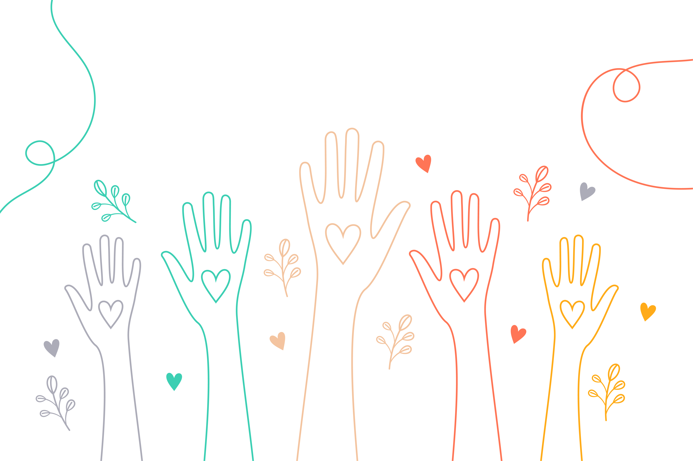

Conectando corações
que querem ajudar
Somos uma plataforma onde solidariedade encontra tecnologia. Unimos quem precisa de apoio com quem tem vontade de fazer a diferença — de forma simples, transparente e humana.

De onde viemos e para onde vamos
Uma ideia nascida da empatia, construída com propósito.
Seja muito bem-vindo(a)! Nós acreditamos que a tecnologia só faz sentido quando serve para aproximar as pessoas e transformar realidades.
Nossa história começou com uma pergunta simples: como podemos usar o digital para fortalecer a corrente do bem? Percebemos que muita gente quer ajudar, mas não sabe como. Ao mesmo tempo, muitas ONGs incríveis fazem um trabalho duro, mas não conseguem ser vistas.
Foi para unir esses pontos que criamos esta plataforma. Nosso propósito é ser esse ponto de encontro único, onde a solidariedade não encontra barreiras.
Aqui, você não precisa ser um expert em tecnologia para fazer a diferença. Desenvolvemos um ambiente pensado para ser acolhedor, simples e intuitivo, para que o foco seja sempre o impacto humano.
Trabalhamos para que cada conexão feita aqui seja baseada na confiança e na transparência. Queremos que você sinta a segurança de que sua contribuição está chegando onde realmente precisa.
Mais do que um site de doações, somos uma infraestrutura de empatia feita por pessoas e para pessoas. Vamos juntos?
A força da nossa comunidade
+0
Conexões Realizadas
+0
Voluntários Ativos
+0
ONGs Parceiras
O que nos guia
Cada decisão que tomamos é orientada por três pilares fundamentais.
Empatia
Colocamo-nos no lugar de cada pessoa. Ouvir antes de agir é o princípio que molda cada funcionalidade que desenvolvemos.
Transparência
Cada pedido e cada doação são rastreáveis. Acreditamos que a confiança só se constrói com clareza total sobre o que acontece.
Conexão
Eliminamos a distância entre quem quer ajudar e quem precisa. Nossa tecnologia existe para que nenhum pedido fique sem resposta.
Pronto para fazer parte?
Crie sua conta gratuitamente e comece a conectar pessoas que querem ajudar com quem precisa de apoio hoje.